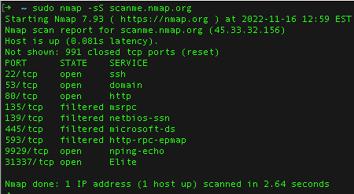
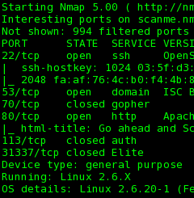

HOST AND SERVICE MAPPING
Nmap
I use Nmap in authorized labs to identify reachable hosts and the network services they appear to expose. This helps me build an inventory and decide what to review.
The screenshots show terminal output summarizing ports and service information. I treat scan results as a starting point and interpret them in context rather than assuming they indicate a weakness.
How I use it in a lab: I choose an in-scope practice host, select a scan appropriate to the exercise, and review the reported hosts, ports, and services. I check unexpected results against the lab documentation.

